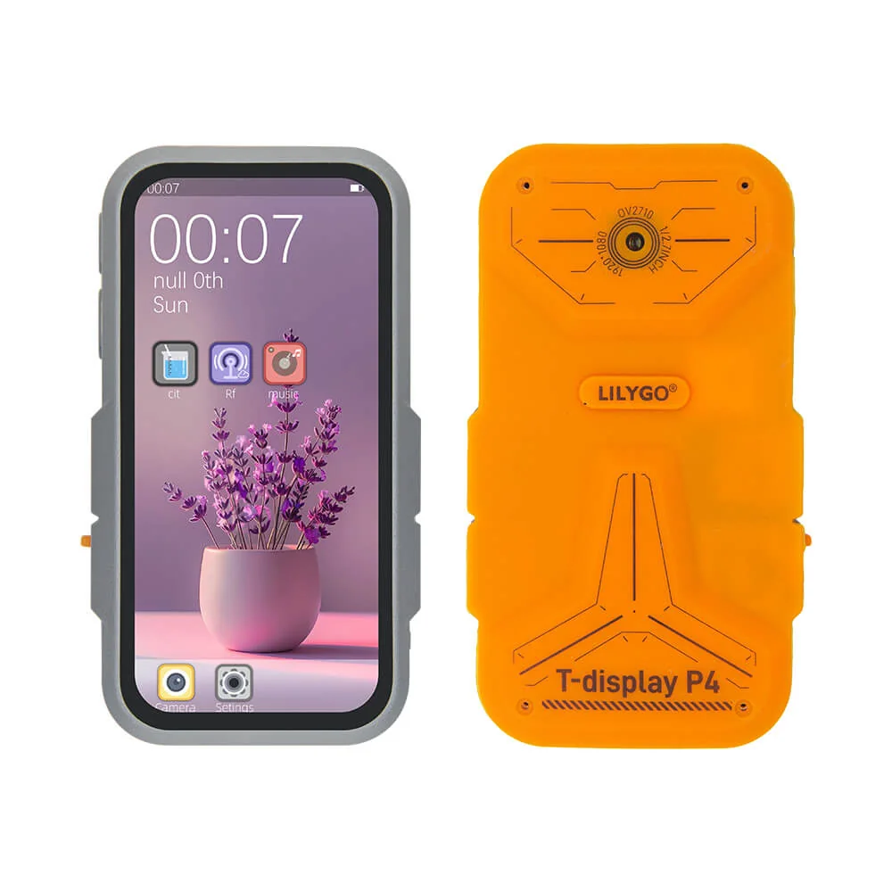

T-Display P4
LilyGO · LilyGO T-Display P4 – ESP32-P4 + ESP32-C6, 4.05" TFT / 4.1" AMOLED, LoRa, GPS, camera, Ethernet
T-Display P4 is a 4.05" TFT / 4.1" AMOLED (versions) Capacitive touch ESP32 display board by LilyGO based on the ESP32-P4 with 16MB flash, 32MB PSRAM.
Features, ports & interfaces
- Capacitive touch
- 32 MB PSRAM
- 16 MB flash
- Wi-Fi 6 (802.11ax, 2.4 GHz) via ESP32-C6 co-processor – version from the ESP32-C6 datasheet
- Bluetooth 5.3 (LE) via ESP32-C6 co-processor – version from the ESP32-C6 datasheet
- Thread (802.15.4) – IEEE 802.15.4 radio of the ESP32-C6 co-processor – SoC capability per the Espressif datasheet; needs firmware support
- Zigbee (802.15.4) – IEEE 802.15.4 radio of the ESP32-C6 co-processor – SoC capability per the Espressif datasheet; needs firmware support
- Matter-capable radio (Wi-Fi / Thread) – ESP32-C6 co-processor capability per the Espressif datasheet; firmware-dependent
- LoRa: SX1262
- GNSS / GPS: L76K GNSS
- Ethernet RJ45
- Speaker: I2S speaker
- Microphone
- Camera: OV2710 2 MP MIPI-CSI (1080p@30, 720p@60)
- Battery charger: LGS4056H + BQ27220 fuel gauge
- RTC
- IMU: ICM20948 9-axis
- Vibration motor: Motor
Specifications
| Parameter | Value | Source |
|---|---|---|
| Screen size | 4.05" TFT / 4.1" AMOLED (versions) | source |
| Touch | Capacitive | source |
| MCU / SoC | ESP32-P4 (dual-core RISC-V 360 MHz + LP 40 MHz) | source |
| MCU family | ESP32-P4 | source |
| Co-processor | ESP32-C6 | source |
| CPU frequency | 360 MHz | source |
| Flash | 16MB | source |
| PSRAM | 32MB | source |
| Wi-Fi | 2.4 GHz Wi-Fi 6 (802.11ax) via ESP32-C6 | source |
| Bluetooth | Bluetooth 5 (LE) via ESP32-C6 | source |
| Category | LilyGO (T-series) | |
| Camera | OV2710 2 MP MIPI-CSI (1080p@30, 720p@60) | source |
| Battery charger | LGS4056H + BQ27220 fuel gauge | source |
| Dimensions | 63 x 109 x 22 mm | source |
| Ethernet | Ethernet | source |
| Expansion / IO | XL9535 16-bit I2C GPIO expander; external keyboard board | source |
| GNSS / GPS | L76K GNSS | source |
| IMU | ICM20948 9-axis | source |
| LoRa | SX1262 | source |
| Microphone | Microphone | source |
| RTC | RTC | source |
| Speaker interface | I2S speaker | source |
| Vendor | LilyGO | |
| Vibration | Motor | source |